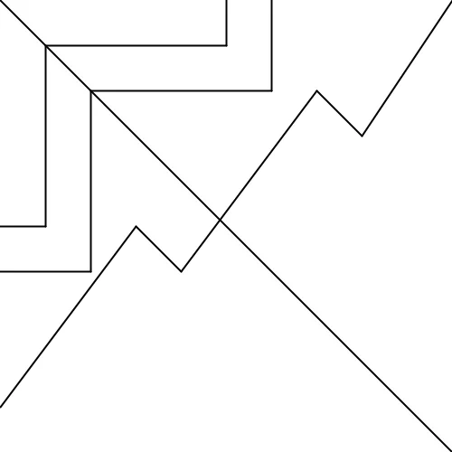
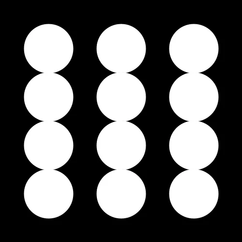
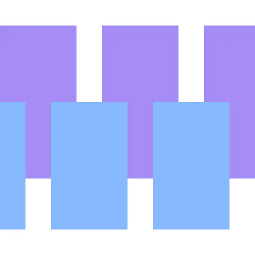

DES 111 · SPRING 2025 · PROJECT 01 · PROCESSING / VISUAL SYSTEMS
DrawIt — Generative Compositions
A compositional system built from lines, shapes, spacing, and color.

01 / OVERVIEW
Concept & approach
A series of code-generated studies in rhythm, negative space, and color continuation. Repeated geometry and carefully structured compositions turn simple primitives into visual systems.
The submitted sketch brief organizes the work into line work, negative space, color continuation, and wildcard compositions. Each category tests rhythm and spatial relationships using repeated shapes.
02 / SELECTED OUTPUTS
From the original coursework



03 / TOOLS & SOURCE
Built with Processing
Processing (.pde) · generative shapes · visual rhythm · composition
Original .pde source files are provided for inspection. Opening the files in Processing may require a compatible Processing installation.